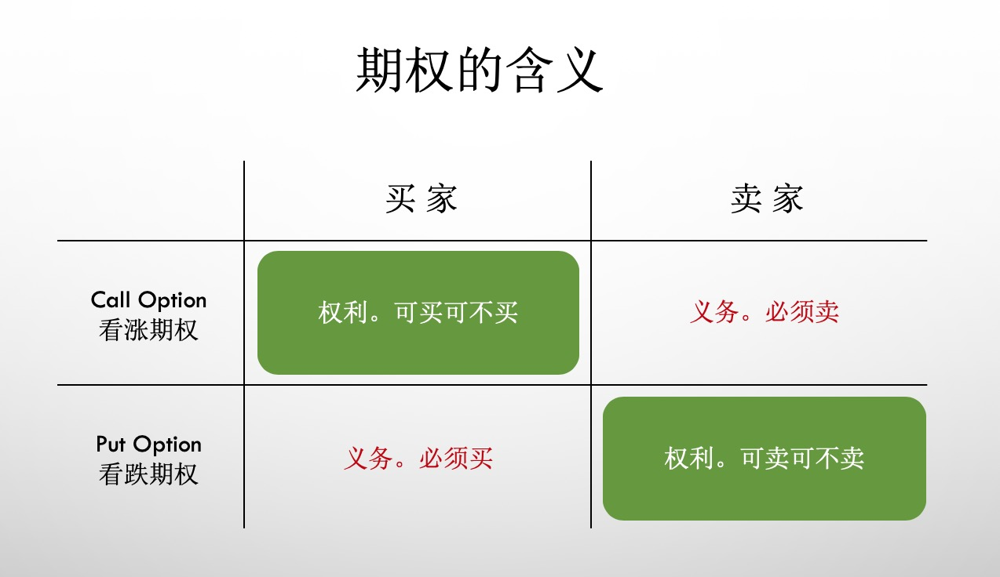
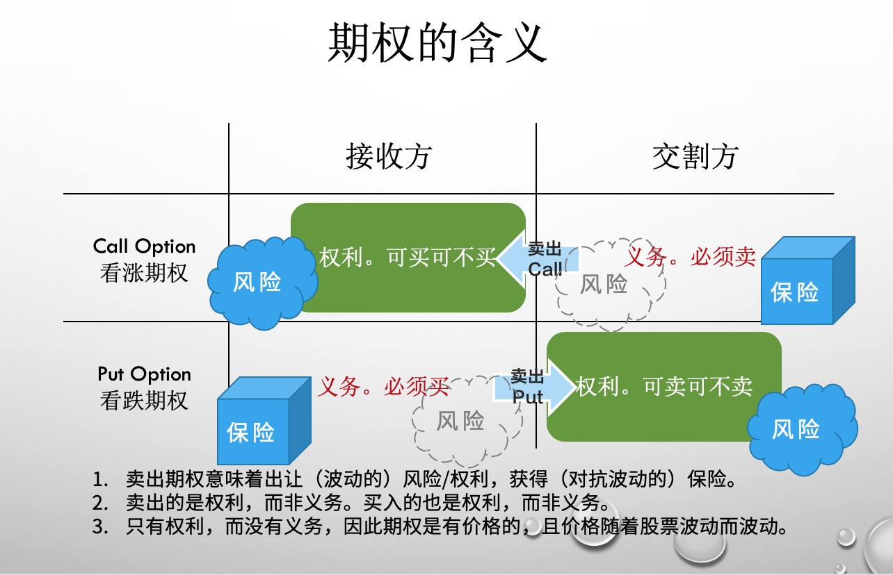
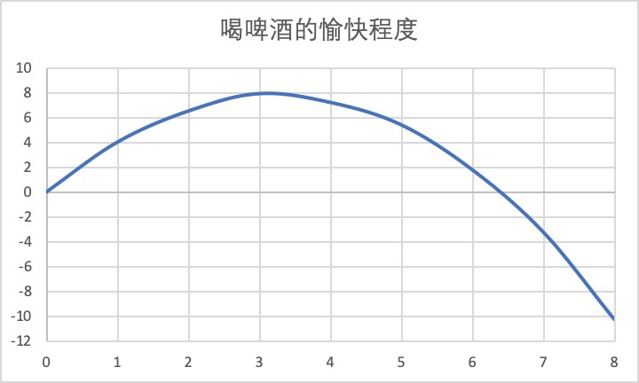

工作中的期权思维（全）
最近在《得到》APP 听万维钢老师的《精英日课 III》收获挺多的。有一种『自己冥思苦想数载，还说不清道不明，别人轻描淡写数语，说得通透清晰』的感觉。
先是关于博弈论的话题，其次是最近关于期权思维的话题，都讲得我恍然大悟。
这两天讲一讲万维钢老师《期权的智慧》这个系列文章的读后感。
1. 什么是期权思维
期权（option）是指一种选择的权利。不是选择『A/B/C/D』不同选项的权利，而是选或不选的权利。
有点绕。拿吃安眠药举例。一个人有失眠的毛病，晚上躺下担心睡不着，可是越担心越睡不着。怎么办呢？就是吃安眠药。头两次，安眠药效果特别好，吃了药躺下，立马能睡着，于是这个人再也不用担心失眠了。因为药放在家里，万一失眠，随时可以吃，睡觉时再也没有了担心，所以更加容易入睡。这样，晚上睡觉前吃安眠药，就成了可选项(option)，也就是期权，可以选择吃，也可以选择不吃。option 是一种权利，而非义务。
权利常常伴随着义务。像谈婚论嫁这种事。古代，家长为自己孩子定了一门亲事，对方家条件不错——这桩亲事既是权利，也是义务。撕毁婚约的道德风险太高。定亲就是不可选项。而今天的一个女神，如果身边有个备胎随时愿意跟她结婚，但是女神也可以选择别人，这才叫可选项（option）。
（比如美国）股票市场中，有两种类型的期权，一种叫看涨期权（call option），一种叫看跌期权（put option）。因为英文表意更为准确，对延伸理解期权帮助更大，因此后面涉及概念，我都用英文。
call option 的含义是，它允许你在约定的时间，以约定的价格，买入一只特定的股票。call 代表买入，option 代表这是可选项。期权到期，买或者不买这只股票，是你的权利，是可选项（option）。
put option 的含义是，它允许你在约定的时间，以约定的价格，卖出一只特定的股票。put 代表放出。期权到期，卖或者不卖这只股票，是你的权利，是可选项（option）。
我做了一张图来帮助你理解其中的含义。

期权也是一种保险，对抗波动的保险。
比如，你持有一家公司的股票，你长期看好它，希望长期持有。可是最近大形势不太好，你感觉有下跌的风险，但是你又不想卖，怎么办？
用股票期权的办法，你可以买这只股票的 put option。如果股票当真跌了，因为你有 put，有一个被承诺的 put 价格，因此它跌再多，跟你都没关系。期权到期你总可以用当初约定的价格卖出它。你的损失最多也就是当初买 put 的那点钱。你的损失有一个上限。
同样道理，如果你手里的股票最近太热了，它可能在一个高点，你想再等等，可是又怕蒙受损失。那你应该买交割价格比当前价高一些的 call option。如果股票真的下跌，你卖掉的 call option 会变得不值钱，买你 call 的人就不会行使他的权力，你等于白赚了 call 的钱。如果股票反而涨上去了，那你不得不把股票卖出去，不过交割价格比你卖 call 时候的价格还高，你还是赚了一笔。
卖 option 的时候，卖出一种权力，得到一些收益，同时也卖出了（对抗波动的）风险。这就是期权的概念。

讲了这么多期权的概念。那么什么叫期权思维呢？就是利用期权的原理，重新解释生活中的现象。
2. 万老师的洞见
万老师就期权思维提出了几个洞见，非常发人深省。对以前没怎么接触过期权，更不要说具备期权思维的人，这些洞见的触动非常大。
2.1. 『期权只是权利，而非义务』
首先你得认识到，期权是权利，而非义务。 你购买了期权，其实是购买了一种权利，期权到期时，根据波动的情况，你可以选择行权，也可以选择弃权。
第一个是房地产的案例。有家开发商在新规划的地块上建房，现在一切还在图纸上，一年后才能交房。现在可以跟开发商先签约，谈好价格，一年后再买入。开发商为确保你不违约，要求你缴纳一笔抵押金（*万老师这里用『抵押金』一词，我理解『保证金』更符合我们的直觉。是笔误？还是美国的房产市场跟中国不一样？*）。用期权思维，这相当于用抵押金买了一个 call。如果一年后房子升值，你有权以当初的低价买入这套房子；如果房价跌了，你大可违约，无非就是损失掉那一点抵押金。因此，正确的操作是多签几份合约，等房屋升值，再把这些合约转手卖出去。万一房屋没有升值，你损失的，也就是买 call 的钱，也就是那点抵押金。但房屋升值，你的收益上不封顶。
上面这个例子，我理解万老师讲的是美国房产市场。在中国，你跟开发商签订的合约，实际上没办法转手卖出去。开发商不会允许你赚走本来应该由他来赚的溢价。开发商不需要你给他的收益上保险。因为在中国，房价上涨是大概率事件。期房合约是一个无法交易的 call。
因为 option 是权利，所以买入 option 需要付代价。例如，买入股票期权，代价就是钞票。你需要购买期权。
实际中，期权既可能被当做杠杆，放到股票的价格波动，又被当做是股票价格的保险，帮股票持有者提前锁定收益，或者对抗风险。这两种属性，投机和对抗风险，是期权顺（标的价格趋）势操作和逆（标的价格趋）势操作时，达成的不同效果而已。
与期权对应的，是股票。股票思维，就是说
2.2. 『期权是一种特权』
第二个例子，是俱乐部买足球运动员的例子。俱乐部买卖成年球星，就像是买卖股票，买卖后，无论涨跌都得自己承受。而俱乐部签一个青少年球员，却像是买期权，支付很少的价格，就可以把他锁定。如果他将来能踢出来，俱乐部有优先购买权，到时候再把他变成股票，连转会费都省了。如果他不是当球星的料，俱乐部最多损失一点青训的钱，和巨额转会费相比，微不足道。
你看，俱乐部以有限的损失上限（青训的钱），去搏一个很大的获利上限（青少年球员中踢出球星来），这是一个不对称的关系。波动上行，你的收益上不封顶；波动下行， 你的损失只是固定的一点点。期权，是一种特权。 用纳西姆·塔勒布在《反脆弱》一书中的提法，这就是『反脆弱』。风险的不对称性，就是反脆弱的数学原理。
只有当你手里有期权的时候，你才谈得上『拥抱不确定性』。如果你手里只有股票，你得考虑承担一切下行的波动风险。
如果你就是年轻的球员，那你手里握着的不是期权，而是股票。你没有特权，一切波动下行的风险，都需要由你来承担。你的收益虽然也是上不封顶，可是你的损失下不封底。想一想，这真是太可怕了。
期权的价格，由下面几个因素决定。1）股票的当前价格；2）期权的到期时间；3）期权规定的履约价格；4）固定的银行利率；5）股票波动性。银行利率考虑的是期权的流动性，我们这里忽略。其它几个因素，应该都比较好理解。1 和 3 决定了对股票价格波动程度的期望，5 代表既往的波动程度，2 代表波动向预期方向走的机会大小。
手握期权的人，有特权，拥有不对称性。他们未来的损失固定，收益却上不封顶。因此他们希望使劲折腾，他们喜欢极端。他们期待『万一成功了呢』。
相对应的，是手握股票的人。波动的上行和下行，都需要他们自己来承担后果。他们的风险很高，他们不希望折腾。
- 期权 = 不对称性 + 理性选择
- 自己开公司是股票思维，风险投资是期权思维。
- 奋斗是股票思维，演化是期权思维。
- 结婚是股票思维，暧昧是期权思维。
- 供给侧是股票思维，需求侧是期权思维。
期权万般好，为什么还是有人买股票呢？万老师给出的解释是，买股票——也就是亲自承担下行的全部风险——才是 skin in the game，才是利益攸关，才有资格出手干预。
2.3. 非线性和反脆弱
非线性是最近两年提得比较多的流行词。什么是非线性呢？就是结果和输入的关系不是直线，不成比例。
第三个例子，喝啤酒，喝一瓶很愉快。那喝两瓶呢？是喝一瓶啤酒的愉快程度乘以二吗？不是。喝啤酒这样的事情，是边际效应递减的事儿。随着喝啤酒瓶数的增加，愉快程度是越升越慢的，达到一个峰值以后还会下降，下不封底。如下图。

数学上，脆弱就是指这样一个上凸下凹的非线性曲线，英文叫 concave。它代表上行利益有限，天花板低；下行的危险却是无底的。 脆弱的东西边际效应递减，容易出现黑天鹅事件。
反脆弱与之相对应，指的是上凹下凸的曲线，英文叫 convex。它代表短期收益下行，但长期看，收益上不封顶。 例如学习说相声。刚开始学，很难会有什么显著效果，但坚持下来，随着水平的进步，说不定有一天说相声的本领强过郭德纲。反脆弱曲线，是一条边际效应递增的曲线。
用数学中的『琴生不等式』来解释脆弱和反脆弱的曲线。对脆弱曲线（concave），函数的平均值小于平均值的函数；对反脆弱曲线（convex），函数的平均值大于平均值的函数。通俗来说，对于脆弱的东西，你希望把输入弄得均匀一点，因为『平均值的函数』比较温和；对于反脆弱的东西，你希望把它的输入弄得极端一点，因为先取『函数』获利最多。
比如城市交通，就是脆弱的。我们不希望有早高峰晚高峰，太极端，我们希望尽量均匀一点。最好是每个小时上路的汽车，都保持均量，这样就不会堵车了。
比如软件开发，是脆弱的。项目内风险、项目外风险一大堆，一丁点儿意外情况就会延期。因此，我们也希望它能均匀一点。最好是每天都能完成一部分，每天能验收一部分，如果风险一定会发生（墨菲定律），那我们也希望风险每天发生一点，这样我们每天解决一点，项目整体的风险更小。这样更不容易延期。修桥修路也是同理，分段施工，保持输入均匀。
再比如上面提到的俱乐部选球星，也是反脆弱的。俱乐部才不在乎一个球员是不是语数外全面发展，他们只在乎这个球员能不能踢好球。一名偶尔能踢出世界波的球员，要比一名平均水平跟他差不多，但是表现稳定的球员，价格更贵。因为俱乐部要的是球员踢出好球。俱乐部有特权。
我再补充一个，韩寒也是这个道理。高考不喜欢韩寒，韩寒偏科太厉害。可是人们喜欢韩寒，因为韩寒写得一手好文章。人们需要好文章，他们才不管写出好文章的韩寒，他的数理化课程有多差，那跟韩寒的好文章没关系。高考很脆弱，它选通才，希望考生成绩平衡一些。人们有 option，人们有特权。
学习也是一个反脆弱的过程。你得保持开放的态度，什么都愿意了解，但是不不想给每个领域平均分配学习时间。把大部分时间用于一本特别难的书，你才能有巨大的收获。你需要大胆开始，无情放弃。
塔勒布据此提出『杠铃原则』：大部分资源用在最低风险的东西上，少量资源用于追逐最高的风险。如果健身是反脆弱的，我们就应该时而放松，时而猛练；如果健康饮食是反脆弱的，我们就应该时而节食好几天，时而大吃一顿。
2.4. 度量现在和未来的重要性
确实，老百姓们谈起『不确定性』、『机会』、『风险』这些词，都是泛泛而谈。说的可能都是主观感觉。而我们需要一个理性的、量化的、可操作的框架。金融理论恰好提供了这么一套框架。
万老师从一篇博文中受到启发，用期权思维来解释人类历史的发展。
首先普及一个概念，因子delta。
宁欺白须公，莫欺少年穷。
中国人讲一个人的功过，身后才可盖棺定论，在世时，永远有翻盘机会。说的就是这个道理。期权思维来讲，就是离到期时间越远，变数越大，看涨/看跌的机会越高，所以期权的价格也越高。白须公人生时日唔多，人生成就基本已成定数；少年路还长，变数还多，不可以当下好坏评价。
对待变革中的人
股票价格波动越大，当下股价对期权的影响因子（delta）越小。换句话说，股价越折腾，当下怎样，越不重要。 这也是一种期权思维。
对于变革中的人，比如创业者，或者只身闯荡大城市的人，他的未来有无限种可能，只要他是个敢闯敢拼的人，现在如何一点不重要。手握期权的人，看好他，你可以买他一个 call；不看好他，可以买他一个 put。但无论如何，你投资他的这个 option，delta 值都不大。
既然 delta 低，我们身处变革中的时候，要尽快做一些能把自己往好的方向变革的事情，比单纯改善现在的境遇，有用得多。
生逢乱世
有一种比较极端的人生波动，比如生逢乱世，颠沛流离，没有基本的安全感，缺乏抗风险的条件，成败得失，波动带来的利益得失都得自己兜着。
用期权模拟这种极端情况，相当于你即买了自己的 call，又卖了自己的 put。你不是在对冲风险，你是在体验风险。股价上行，你能赚钱；股价下行，你得赔钱。而且输赢在很大程度上都不保底。
万老师讲，数学上可以证明，这个即买 call 又卖 put 的组合，总 delta = 1。简单说，你不仅完全持有自己这只股票，还被禁止与外界做期权交易。所以，正确的策略是只在乎现在，完全不在乎未来。
这和很多贫穷家庭的孩子行为模式一致。今朝有酒今朝醉。
3. 生活和工作中的期权思维
除了万老师举的例子，我还发现生活和工作中，有很多可以用期权思维去理解的例子。
3.1. 工作中的责任感
万老师前面已经提过，创业是持有股票，股东承担股票波动的收益和风险，因此股东希望股票平稳变化。老板是股票思维。
打工是持有期权，对下行波动的风险有限制，同时享受上行波动带来的收益，上不封顶。实在不行，还能行使特权，换个工作。员工是期权思维。
吴军也说过这个问题，最佳的企业管理方式就像开车，组织下层（员工）应该是引擎，创新的动力从下层来；而组织上层（老板）负责打方向和踩刹车，他们适度给引擎降降温，给整辆车指明方向。用期权思维和股票思维来理解，也能得出同样的结论。员工是期权思维，他希望企业做大做强，他能享受企业上行带来的收益。企业万一做不好，他的损失很小，或者就没什么损失。企业做不好的损失由股份持有人承担，由老板承担，所以老板关注的是，万一企业做不好怎么办，他们承担企业下行波动的风险，他们做决策更多考虑风险。
老板盯问题，审风险，员工谋发展。
看，这是不是挺反直觉的？跟我们的直觉恰好相反。
现实中有些企业就跟我们的直觉一致，跟股票和期权的思维相反。这样的企业里面，老板累死累活劳心劳力，恨员工木木然。这样的企业，用期权思维来看，症结就很简单了。员工不持有期权，员工享受不到企业上行带来的收益，企业的波动跟他们没关系，员工只是出卖工作时间的劳动力而已。在这样的企业里面，做事对得起这份薪水就好，不值得奋斗。
3.2. 2VC 创业模式崩溃
创业是一件成功概率比较低的事，VC（Venture Capital，风险投资）利用期权思维，以早期注资、提供协助的方式，帮助创业者专注于产品和业务，提高创业成功的概率。VC 做的是以小博大的生意，他们买创业者的 call，帮创业者的损失上保险。创业者输了也不要紧，不需要承担失败的经济损失。这是 VC 的基本逻辑。
国内从十多年前，出现一波 2VC（to VC，面向风险投资）的『创业』逻辑，也叫『PPT 创业』。他们的逻辑是，做一份 BP（商业计划书），找到 VC 投资。投资到位以后，像模像样的拉队伍、做产品。迅速把钱烧光以后，跟 VC 报告，做个结项，再继续下一轮写 BP 拉融资的周期。
这种创业方式中，VC 投资创业者，买了创业者的 call，他们是期权思维。创业者也是期权思维，他们投资了行业 + 资本这个组合的期权，他们空手套白狼，他们买行业和资本的 put。
当行业和资本市场行情不错的时候，VC 打工，PPT 创业者赚钱，行业和资本赔钱。做多行业的人受累，做空行业的人赚钱，这就是泡沫。
3.3. 创业，到底是股份思维还是期权思维
这个话题很有意思。过去几年，常能看到对穷忙的创业者。他们喜欢折腾，喜欢冒险，不讲方法，一把梭，就是干。看上去很享受尝试的过程，对结果不在意。就像在瞎忙。
万老师不是说创业者是股票思维吗？可是这类创业者，为什么这么喜欢折腾呢？折腾是期权思维的特征啊。这些创业者，他们是傻子吗？是基因变异？还是他们不懂经济理论，所以做法不能表达自己的想法呢？
创业，到底是股票思维，还是期权思维？
我思考了一下，觉得答案在于：你的代价是什么，你输不输得起。
如果下行波动带来的损失，你承担不起，那你应该用股票思维，多考虑下行波动的风险。你的损失超过你的承受范围，你要尽量避免损失。相反，如果下行波动带来的损失，你承担得起，你的代价不大， 那你就应该用期权思维，使劲折腾。万一折腾出个动静来，收益可是上不封顶。万一折腾失败了，也没关系，损失你兜得住。
3.4. 创业是否应该 all in
首先得定义下，什么叫 all in。
有些创业者是时间 all in。年轻的他们，最不缺的就是时间，这种方式的 all in 对他们简直就是零风险零损失。如果能积累下经验和人脉，不亏还赚。不使劲折腾，对不起人生，对不起青春。这样的 all in，何乐而不为呢？
有些创业者拿出十万元跟人合伙开蛋糕店，这些钱是他东拼西凑来的，是他的全部家当，一家人都指望他的蛋糕店能赚钱养家。虽然十万不多，但这个损失，他承担不起。这次创业对他来说，妥妥的是股票思维。下行波动带来的风险，他得全部承担。这样的 all in，应当审慎。
吴军在他的《信息论 40 讲（第 17 讲）》里面提到，在信息论中，任何硬性的决定（hard decision）都要损失信息，而且这样的损失是巨大的，下不封底，补都补不回来。这里讲的补不回来的损失，我理解就是前面提到的，承受不起的损失。
所以再有人跟你说创业要 all in，你静静地看着他，笑笑就好了。当你生活无虞，也可以投入自己最不值价的资源，玩一把 all in。
3.5. 战略懒惰和战术勤奋
雷军说过一句话，不要用战术上的勤奋，掩盖你的战略上的懒惰。
什么样的人，才会用战术勤奋，去掩盖战略懒惰？
是期权思维的人。
期权思维的人有特权，他们享受风险不对称带来的特权，他们不用承担下行波动带来的风险，所以他们更愿意以战术勤奋的方式来折腾。
那为什么会战略懒惰呢？我猜，是因为他们的期权不充分，他们享受不到企业上行波动带来的收益。享受不到上行波动的收益，最大的问题是，个人和企业的目标就会不一致。个人面临二选一，要么为企业投入，要么为个人投入。难两全。
举个例子。
华杉讲《孙子兵法》，第一篇五事七计，华杉就强调，这里的『计』是计算的『计』，不是奇谋巧计的『计』。指战前要做好基本面的计算，基本面上有了胜算才能开打，先胜后战，而不是先打起来，再去想怎么胜利。这是做人做事的基本道理。
现实中有些老板就是好像不理解，好多决策都抱着『做做试试嘛』。这个领域的专家告诉他，这样做不行，他也不放弃，坚持要试。结果呢，一败涂地。难道是这个老板傻，不明事理？我看不是。只能说明，这个老板思考事情，用的是期权思维。他对损失的预判，远远小于事成以后，收益对他的诱惑。风险的不对称性，这种特权，使他宁愿违背市场规律，违背逻辑去做事，去赌一把运气。
3.6. 亲子，朋友和师长
十几岁的孩子叛逆，很多孩子抱怨父母思维僵固，不思进取，束缚自己手脚，不让尝试这个，也不让尝试那个，胆小如鼠。
用股票思维，孩子是父母的股票，父母首先考虑的，是股价的下行波动，其次才是希望这只股票大涨，一飞冲天。孩子这只股票的任何下行波动，父母都要完全承担，而有些损失，真的是补不回来的，承担不起。因此也就能理解，为什么父母对孩子的选择，经常束手束脚，不予支持。
师长同学的关系，和亲子关系不同。从入学开始，大家就知道，这段关系会维持几年时间。老师希望这几年你健康平安，学有所成。同学至少希望能跟你和平相处，有摩擦最好尽快消除，以免往后难堪。大家总体还是会注意一个损失的底线。在上学的那几年，师长关系是持有对方的股份，无论好坏你都逃不开，上行波动和下行波动你都得承受。
朋友关系又不同。交朋友，更注重的是对方的长处，而非底线。我们很少因为这人不太坏，选择跟他交朋友吧。跟人交朋友，大多数时候是因为对方某方面有特长，吸引到自己。交朋友是期权思维，是特权。对方有特长，你选择和他做朋友。你期望从他的特长方面获得他的帮助。期望他的特长能帮他更成功。你跟他交朋友是买了他的 call。你希望他发挥所长，使劲折腾。
3.7. 职场上下级
今天听云计算领域大佬，飞总，讲他的职场故事。他曾经的一个大领导，就在他职场发展最关键的时候，干了件等于背后捅他一刀的事。想当年，我比飞总还傻逼。当年按下不表，说点职场关系中的期权思维。
职场中上下级的关系，首先是共进退的关系。彼此会承受一定程度对方的下行风险，这个下行风险带来的损失可能大到让自己付出惨痛代价，但不会下不保底。因为实在太差，对方就该被公司清除出队伍了。同时，我们也享受对方上行带来的收益。这个收益通过团队传给自己。而上行收益也是有个限制的。太突出的人，公司一定会委以重任，他会走到很高的 level 去，离你比较远，跟你也就没关系了。
概括起来，职场中的关系，下有保底，上有封顶。是一种比较特别的 option。
现实中，我们常常辅以私人间的关系。比如领导看一个下属有潜力，他可以买他的 call。平时对他多加点拨，利益分配时多照顾他一些，多给他一些展示自己的机会。等等。这个 call 是人与人之间的连接，而不只由工作关系来维系。这位领导离职了，去到新公司，下属对他的感情依然会存在。
反之，如果一个领导看某个下属不顺眼，常用的办法可能是，找个机会，尽快让他从自己的 team 中滚蛋。这等于卖了这个下属的 put。这种交易很可能是要付出代价的。比如旁边的 team B 接收了这个不讨上级喜欢的下属，条件是原 team A 要帮 team B 承担绩效考核中的两个 C 名额。
处职场，最理想的情况，是让领导买自己的 call，办法是你得让你的领导看到，你现在的股价高（能力不错），波动性强（能折腾，会来事儿），到期时间长（年轻嘛），信誉好能兑付（信用好，知恩图报）。
如果和领导不对付，处不好，那就让领导不看好你，让领导卖自己的 put。领导不看好你，卖 put 可以提前锁定收益，何乐而不为。
最最糟糕的情况，是雪藏。没错，就是娱乐圈常用的那个词，雪藏。雪藏的逻辑是，我要让你在我这里，股价归于零。从领导角度看，有点同归于尽的意思。能被雪藏的下属，一定干了什么让领导痛恨的事情。
4. 结语
其实还有很多现实中的例子，是可以用期权思维来解释的。现代社会大体上，是一个商业社会，陌生人的连接频率和深度，明显多于传统乡土社会中，乡里乡亲之间的频率和深度。年轻人闯荡大城市，首先要学习的，就应该是商业社会的精神和逻辑。可是，课堂上，没有这样的课程教授。甚至基本的个人财务管理知识，都不教授，却要在走出象牙塔的那一刻，让一个年轻人独立面对所有的诱惑、诡计和机遇，独立去做抉择。
我以前听人说，西方自古是商业社会，现代文明随着西方文化扩散，走入商业社会，对中国这样的乡土文化国家，是不公平的。我们的文化骨子里不熟悉商业社会那一套理论，我们吃亏了。
可是吃的什么亏？吃了多大亏？没人讲得清楚。这种提法听起来像在抱怨，后来也就没人再提了。
随着对西方文化的理解加深，对科技，对经济，对社会学，等等学科的知识加深，越来越能看清楚所谓商业社会的底层规律，也越觉得其实万变不离其宗，落到人类对自由、幸福、健康的追求，东西方都是一样的。有差别的，是从生活中的一些微小的共识开始。
所以其实不难，多接触多观察，多换位思考，我们也能很好地融入这个大的环境，过好国际化的生活和工作。
这里举个例子。半个多月前，看了《美国陷阱》一书，对于作者在书中一边批评美国司法不公正，一边又赞扬美国司法体系透明的逻辑，表达了不理解。后面立刻有网友激烈评论到，说美国就是在利用自己的世界霸主地位，利用不平等的博弈，压制本国企业的竞争对手（作者是法国人，受到美国的司法指控）。我知道这位网友是借此影射中美贸易摩擦中，美方的做法。对他的反应，我完全能理解。但我觉得很奇怪的是，他没搞清楚什么叫公平的博弈。博弈是一场棋局（playground）下，双边或者多边的策略游戏（play）。博弈有这么个前提，就是假设玩家（player）都是理性的，会从为自己负责的角度，做出理性选择。我认为对于一场博弈，只要双方都有出牌的机会，这场博弈就是公平的。历史上以小搏大、以弱胜强的博弈多得很。如果一定要双方实力相当，才能博弈，这世界恐怕弱势的一方恐怕永远没有翻盘机会。美国虽然强大，但是美国没有压制对手的出牌机会。特朗普一边加关税，一边呼吁领导人会谈。加关税不过是为了增加博弈筹码，不算不公平。再说，中国后来不也选择了加关税作为回应嘛。难道美国人也要说中国是在跟美国不平等博弈？
多说一句。有聪明的读者这里可能会想到。仅仅保留对方的出牌机会，博弈就是公平的吗？那如果对方作弊呢？一方作弊的情况下，也算公平的博弈吗？
答案是，算的。也是公平的博弈。只要大家还在牌桌上，手里还有牌，还有出牌机会，这就是公平的博弈。作弊是违反规则，没错。可是仔细想想，规则是什么？规则是前面若干次博弈的过程中，双方达成共识的协议。是之前若干次博弈的结果。如果现在形势变了，之前博弈中形成的均衡关系变了，强的一方变弱，弱的变强了，对应的规则是不是可以改变呢。否则哪里还需要新的博弈，哪里还需要谈判外交，甚至都不会发生世界大战。所谓作弊，不过是没有通知对方，单方面打破规则而已。万老师在《博弈论》最后一讲中，提到过最高级的博弈，就是制定新规则。讲的就是这个逻辑。
所以你看，打小的文化熏陶，还是挺重要的。我们在商业社会里面，真的很吃亏。
我们是从乡土文化中成长起来的，我们承认自己的底层逻辑有不足，我们愿意多努努力去学。
好消息是，万维钢老师在提到最近解读《范围》一书的时候，反复提到，没有『赢起跑线』的说法。人生是一场无限游戏，除了死亡，没有终点。所以无论什么时候，只要努力，都有机会翻盘。所谓赢起跑线，不过先发优势，不过是给后来者树立的一道门槛而已。
在强调一句，期权思维真的很有用。希望你也能在工作和生活中，学会使用它。